เผยภาพเรนเดอร์ DELIVER-E รถตู้ไฟฟ้าเพื่อการจัดส่งสินค้าโดยสตาร์ตอัป Bollinger
DELIVER-E เป็นรถตู้ไฟฟ้าสำหรับจัดส่งและบรรทุกสินค้าขนาดกลาง ใช้ระบบขับเคลื่อนด้วยล้อหน้า และได้รับการออกแบบทางวิศวกรรมเพื่อให้เหมาะกับงานบรรทุกในหลายขนาด ได้แก่ คลาส 2B, 3, 4 และ 5
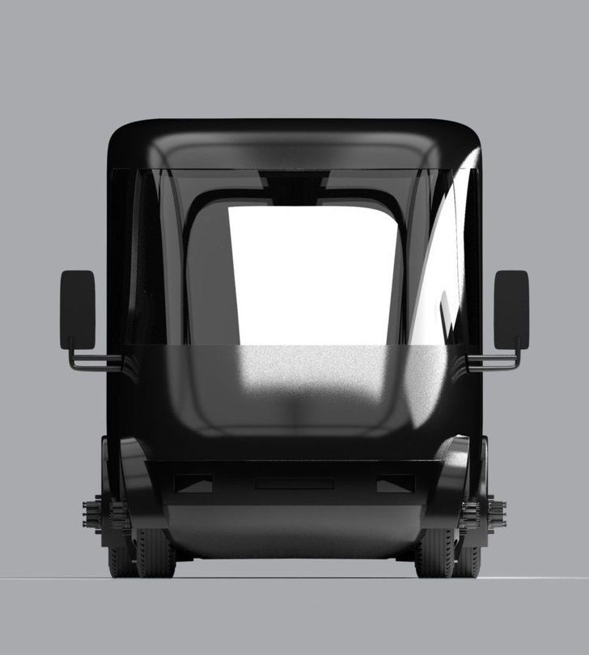DELIVER-E มีชุดแบตเตอรี่ให้เลือกหลายขนาดโดยให้ระยะทางสูงสุดถึง 200 ไมล์ ได้แก่ 70, 105, 140, 175 และ 210 กิโลวัตต์ต่อชั่วโมง และมีอัตราการชาร์จที่เร็วด้วย DC สูงสุด 100 กิโลวัตต์พร้อมพอร์ตชาร์จในแบบมาตรฐานสากล
DELIVER-E ยังเอาใจคนส่งของโดยออกแบบความสูง (Step-in height) ต่ำที่สุดในบรรดารถตู้จัดส่งสินค้าที่ความสูงเพียง 18 นิ้วเท่านั้น ส่วนของพื้นภายในตู้บรรทุกสินค้าจะแบนราบและมีหลุมล้อเพียงเล็กน้อย จึงช่วยให้มีพื้นที่สำหรับจัดวางสินค้าได้จำนวนมาก และตัวรถออกแบบตามหลักอากาศพลศาสตร์ช่วยให้มีระยะวิ่งที่ดีขึ้น
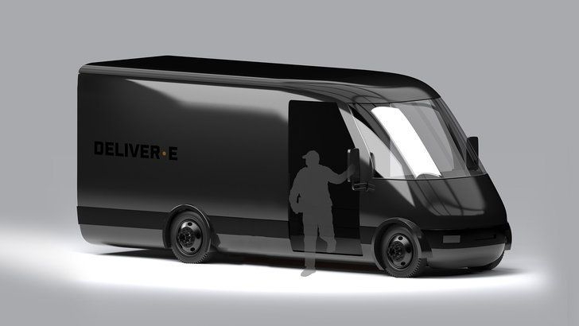ที่สำคัญ DELIVER-E ในแต่ละคลาสมีต้นทุนการเป็นเจ้าของ (TCO) น้อยกว่ารถที่ใช้ก๊าซและดีเซล จึงเหมาะกับธุรกิจจัดส่งสินค้าที่กำลังเติบโตอยู่ในขณะนี้ และจะเริ่มการผลิตในปี 2022
ปี 2017 Bollinger ได้เปิดตัวแนวคิดรถกระบะ EV สองประตูในงาน Los Angeles Auto Show ต่อมา Bollinger ได้เปิดตัวรถกระบะไฟฟ้าเอนกประสงค์ B1 และ B2 ในงาน Los Angeles Auto Show 2019 ซึ่งมีแผนจะผลิตปลายปี 2020 และส่งมอบต้นปี 2021 มาถึงตอนนี้ก็เปิดเผยว่าจะมีรถตู้ไฟฟ้าอีกด้วย ซึ่งมีแนวทางที่ใกล้เคียงกับ Rivian ดังนั้นต้องรอดูกันต่อไปว่าของ Bollinger และ Rivian จะแตกต่างกันอย่างไร
เปิดตัว 1.3 แสน! Wuling Hongguang MINI EV รถยนต์ไฟฟ้า 4 ที่นั่งที่ยอดขายพุ่งแรงสุดๆ
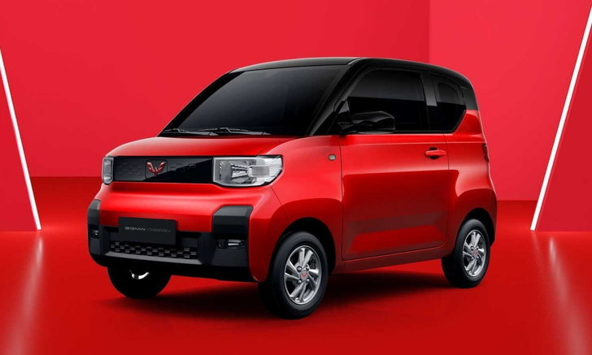ถือว่ากระแสดีเกินคาดสำหรับ Wuling Hongguang MINI EV รถยนต์พลังงานไฟฟ้าขนาดเล็กจาก กลุ่มบริษัท SAIC-GM-Wuling ที่เปิดตัวที่ประเทศจีนไปเมื่อไม่กี่เดือนที่ผ่านมา แต่ได้รับการตอบรับที่ดีจากตลาดยานยนต์ในประเทศ
โดยหลังผ่านมาไม่นาน Wuling Hongguang MINI EV สามารถสร้างยอดขายทะลุ 50,000 คัน เป็นที่เรียบร้อยจากข้อมูลของ Gasgoo สำหรับรถคันนี้มีความยาวเพียง 2,917 มม., กว้าง 1,493 มม. และสูง 1,621 มม. ถือเป็นรถที่กะทัดรัดอย่างมาก นอกจากนี้อีกจุดเด่นของมันก็คือเรื่องราคาที่เริ่มต้นเพียง 28,800 หยวน (ประมาณ 130,000 บาท)
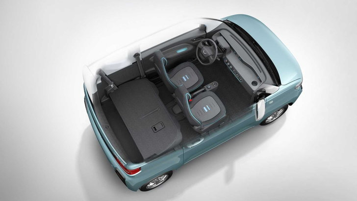ซึ่งในการทำตลาดครั้งนี้แบรนด์จากแดนมังกร ตัดสินใจเปิดโชว์รูมทั้งหมด 100 แห่งทั่วประเทศ เน้นตั้งอยู่ในสถานที่ที่มีประชาชนผ่านจำนวนมากเพื่อดึงดูดความสนใจให้มากที่สุด ก่อนได้ผลที่ดีเกินคาด
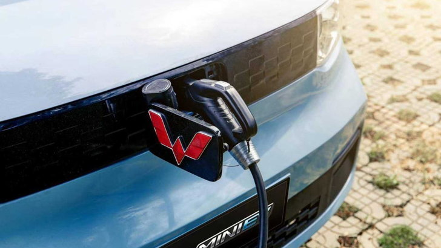โดยคำจำกัดความของเจ้ารถคันนี้ที่มีนามว่า Wuling Hongguang MINI EV ก็คือ "เล็กด้านนอก ข้างในใหญ่" ฟังดูแปลกๆ แต่แท้จริงแล้วคุณลักษณะพิเศษของรถ 4 ที่นั่ง คันนี้ก็คือภายนอกมันอาจดูเล็ก แต่ภายในมันสามารถจุของได้มากถึง 741 ลิตรโดยพับเบาะหลังเก็บ
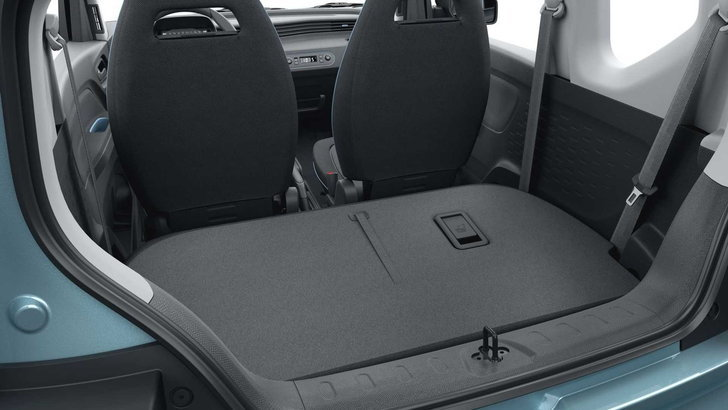 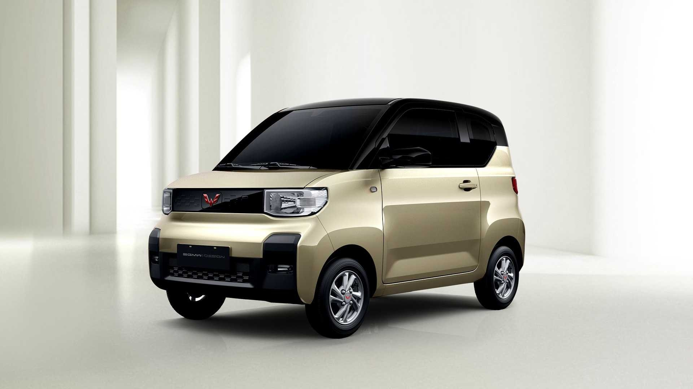 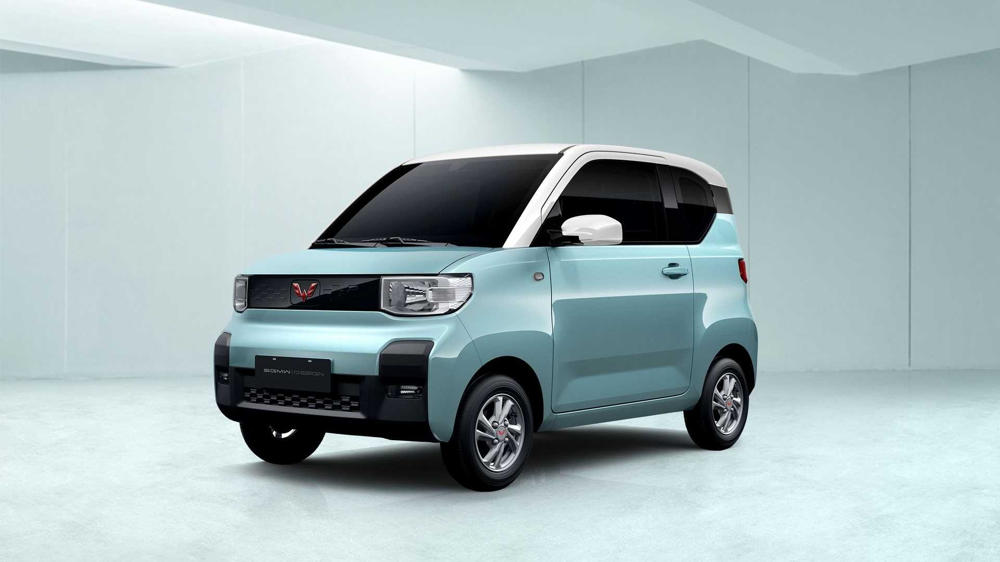 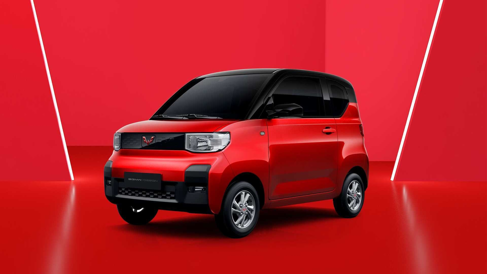อีกหนึ่งจุดเด่นของ Wuling Hongguang MINI EV ก็คือมันสามารถขับเคลื่อนได้อย่างคล่องตัวในถนนของประเทศจีน และสามารถจอดในที่แคบๆ ได้ โดยขุมกำลังขับเคลื่อนจะเป็นแบตเตอรี่ขนาด 9.2 kWh ที่สามารถวิ่งทำระยะทางได้ไกล 120 กม. และมีรุ่นแบตเตอรี่ที่ความจุมากกว่าอย่าง 13.8 kWh ที่วิ่งได้ไกลขึ้นถึง 170 กม. ทำความเร็วสูงสุดได้ 100 กิโลเมตร/ชั่วโมง
เจอเพียบ! เจ้าของร้องเรียน ฝากระโปรง Chevrolet Corvette C8 เด้งระหว่างขับขี่
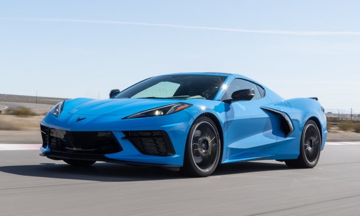Chevrolet Corvette C8 ต้องถูกเรียกคืนอย่างด่วนจี๋ เมื่อพบปัญหาฝากระโปรงหน้าเด้งในขณะที่รถกำลังแล่นอยู่ กลายเป็นที่พูดถึงอย่างร้อนแรง เพราะในกรณีนี้ไม่ได้มีผู้ใช้เพียงรายเดียวที่ประสบกับปัญหาดังกล่าว ซึ่งค่อนข้างมีผลกระทบด้านความปลอดภัย
เช่นนั้นทางค่ายจึงรีบรับมือกับเรื่องนี้อย่างเร่งด่วน เรียกคืนรถ Chevrolet Corvette C8 เพื่อทำการอัปเดตโมดูลควบคุม เพื่อจำกัดความเร็วของ Corvette ไว้ที่ 26 ไมล์ต่อชั่วโมง (42 กม.) หากระบบตรวจพบว่าฝากระโปรงกำลังเปิดอยู่ อีกทั้งยังขึ้นข้อความปรากฏที่หน้าจอว่า "รถกำลังถูกจำกัดความเร็วเนื่องจากพบว่าฝากระโปรงเปิดอยู่"
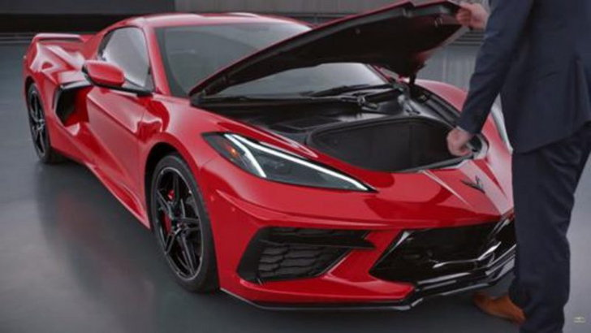นอกเหนือจากการแก้ปัญหาเบื้องต้นแล้ว GM ยังเข้ามาดูแลในส่วนของการแก้ไขปัญหาในจุดสำคัญ เพื่อลดโอกาสในการที่ผู้ขับขี่จะเผลอไปโดนปุ่มเปิดฝากระโปรงโดยไม่ได้ตั้งใจ ซึ่งพวกเขาจะอัปเดตให้ปุ่มเปิดฝากระโปรงต้องใช้เวลากดที่นานกว่าเดิม เพื่อไม่ให้ผู้ขับเผลอไปโดนปุ่มจนฝากระโปรงเด้งออก โดยการอัปเกรดต่างๆ จะกระทำผ่านระบบไร้สายทั้งสิ้น
โดยเจ้าของรถ Chevrolet Corvette C8 สามารถนำไปแก้ไขปัญหาดังกล่าวได้ที่ตัวแทนจำหน่าย และเพื่อความปลอดภัยในการขับขี่บนท้องถนน หน่วยงานบริหารความปลอดภัยการจราจรบนทางหลวงแห่งชาติได้แจ้งเตือนไปยังผู้ผลิต หลังจากได้รับการร้องเรียนถึงกรณีที่เกิดขึ้นด้วยกันถึง 8 ราย ซึ่งกล้องหน้ารถสามารถจับภาพเหตุการณ์ทั้งหมดเอาไว้ได้
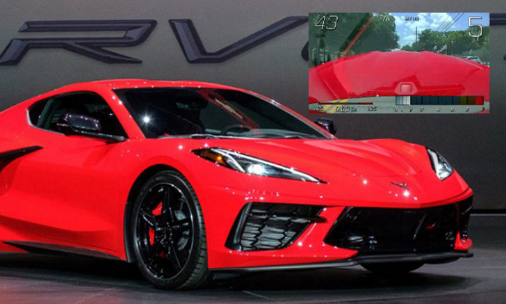